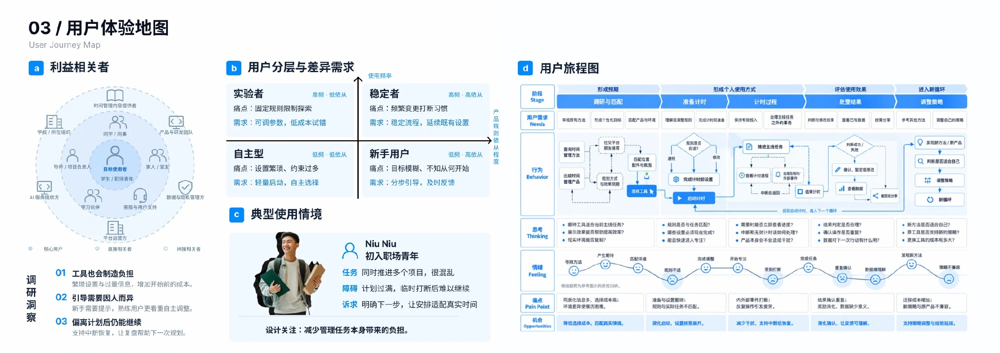
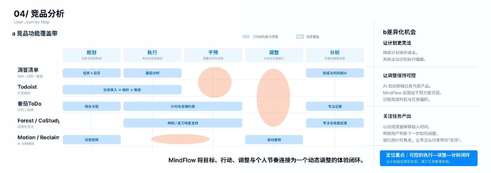
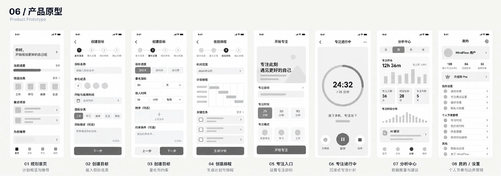

研究生 · 数字产品 · 交互设计
Mind Flow
时间管理应用
一款时间管理应用概念，串联任务计划、专注执行和复盘，帮助用户根据执行情况调整安排。

项目概览
从计划到执行
通过用户体验地图和竞品分析梳理任务管理中容易中断的环节，把计划、执行、分析和个人设置串成连贯的操作流程。
交互与视觉
用低保真原型推敲信息架构，再建立颜色、图标和组件规范，形成任务规划、专注计时与数据回顾的高保真界面。
项目图稿



